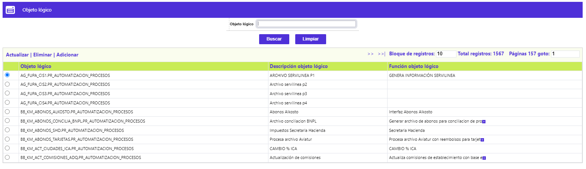
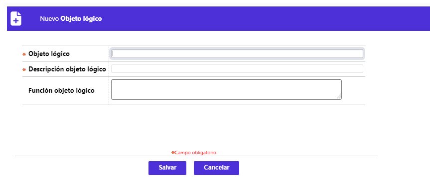
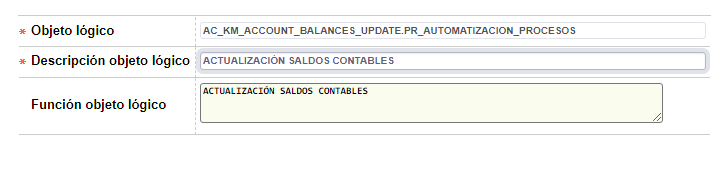

Definición de objetos lógicos
Esta opción le permite a los usuarios técnicos registrar aquellos objetos lógicos que identifican a cada uno de los procesos que serán parametrizados en la opción Definición grupos de procesos.
La opción cuenta con el campo Objeto lógico que servirá como filtro en la pantalla principal. Adicionalmente cuenta con las opciones de Actualizar, Eliminar y Adicionar.

Adicionar: Al activar ese enlace se despliega el siguiente formulario .

Objeto lógico |
Este campo alfanúmerico acepta hasta 61 caracteres y permite ingresar el nombre exacto del objeto lógico que corresponderá a uno de los procesos a definir en la opción Definición grupos de procesos. |
Descripción objeto lógico |
Campo obligatorio alfanúmerico de 30 caracteres en el cual se debe ingresar una breve descripción del proceso que realiza el objeto lógico a parametrizar. |
| Función objeto lógico | Campo opcional de 255 caracteres en el cual se puede describir con detalle que tipo de acción es realizada por el objeto lógico parametrizado. |
Actualizar: si el usuario selecciona un registro e invoca la opción Actualizar se despliega el siguiente formulario con el campo Objeto lógico no editable.
